Widgets
Ringe, Coach und Liga, auch auf dem Sperrbildschirm.
Für iPhone, iPhone Duo und Apple Watch
Du öffnest HealthUp+ und weißt, was dein Tag braucht: Gas geben, locker bleiben oder früher ins Bett. Dazu Ernährung mit Barcode und Rezepten und eine Wochen-Liga, in der Freunde deine Punkte sehen, nie deine Gesundheitswerte.
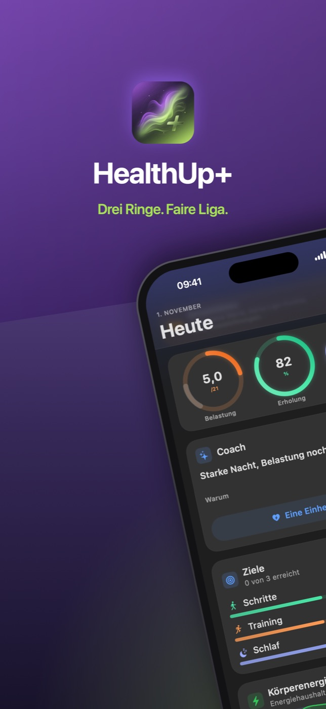
Dein Tag
Die Werte entstehen auf deinem iPhone aus den Daten, die du in Apple Health freigibst, verglichen mit deinem eigenen Normalwert. Schätzungen zur Orientierung, keine Diagnose. Wie wir rechnen, steht in der Methodik.
Coach
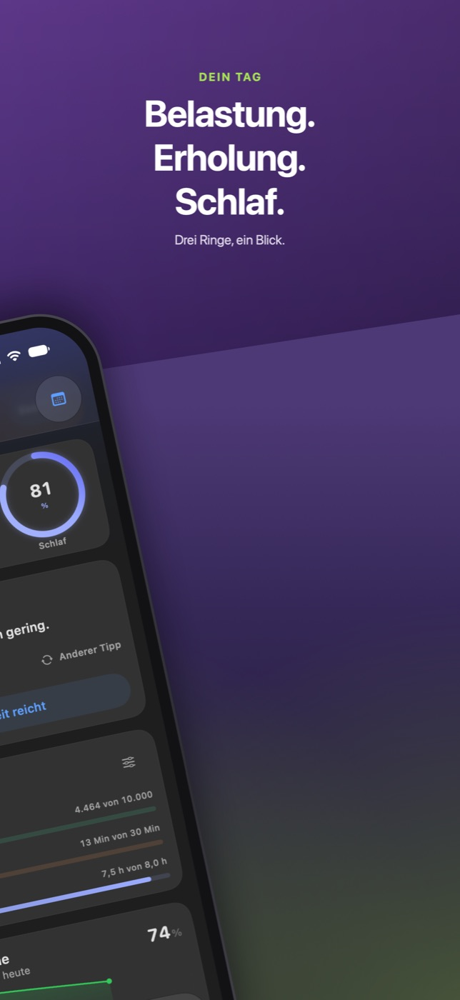
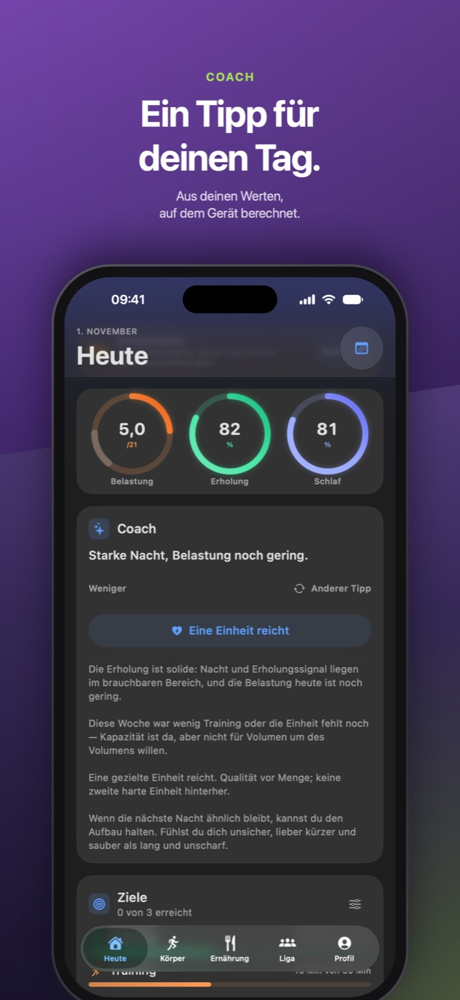
Schlaf und Stress
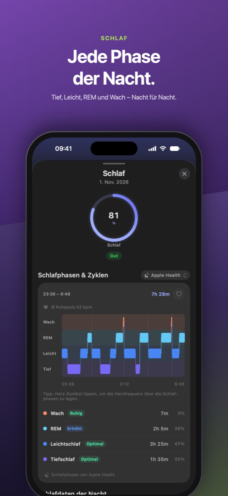
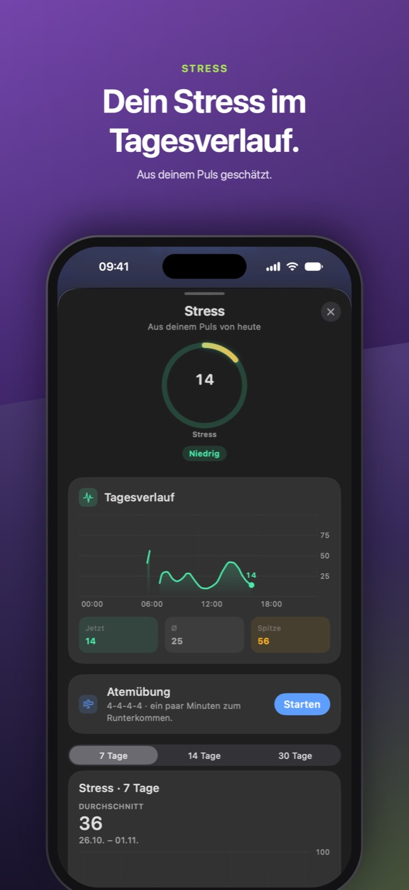
Körper
Die Berechnungen und ihre Quellen stehen in der Methodik.
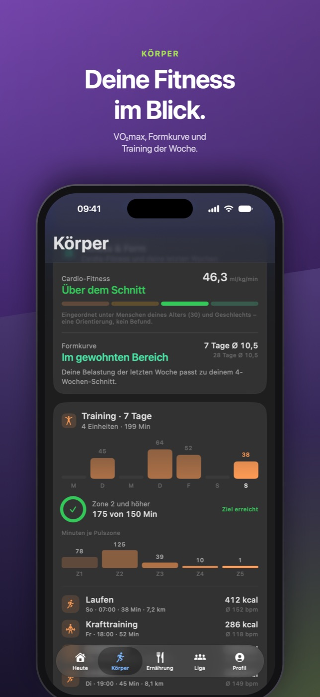
Ernährung
Nährwerte stammen aus offenen Datenbanken und sind bei Gerichten meist geschätzt. Bei Produkten mit Barcode gelten die Angaben auf der Verpackung. Rezeptbilder und Rezepttexte sind mit KI erstellt und von uns geprüft; die Bilder zeigen Serviervorschläge.
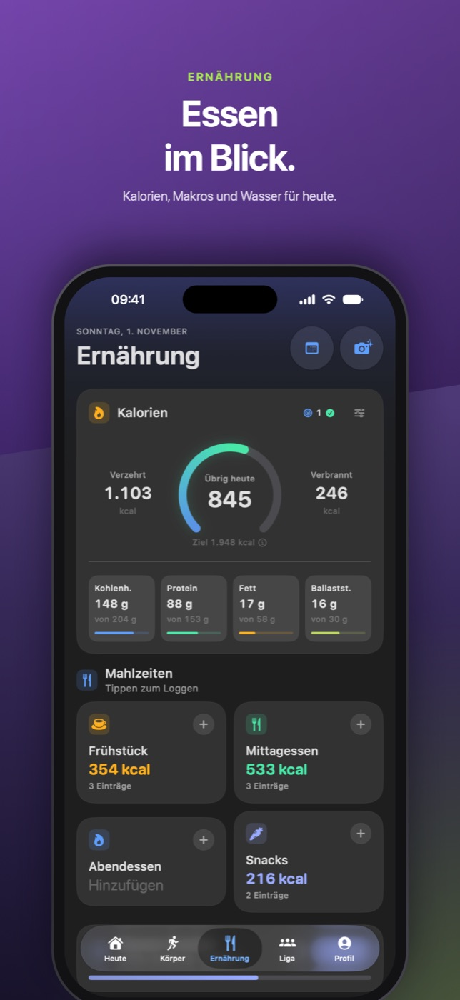
Liga
Was in der Liga öffentlich lesbar ist, steht im Datenschutz, die Regeln unter Liga und Community-Regeln.
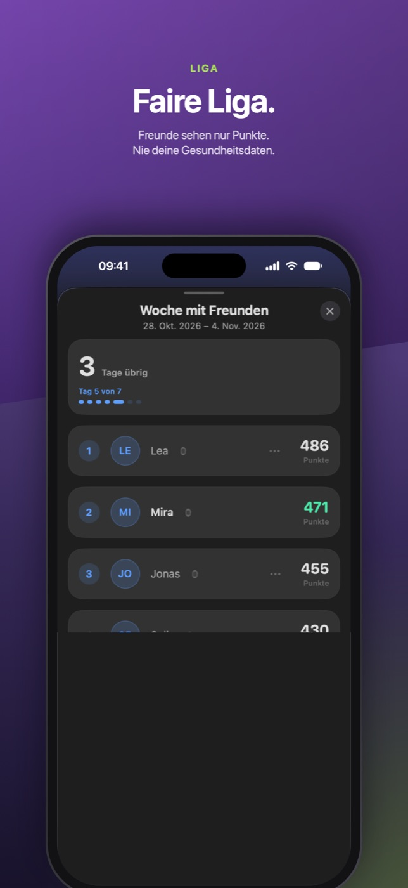
iPhone Duo
Auf dem iPhone Duo zeigt HealthUp+ Ringe, Coach, Körperenergie, Stress und Körperwerte nebeneinander. Schlaf und Stress öffnen sich neben deinem Tag, und halb aufgeklappt liegt die Atemübung über dem Knick, die Bedienung darunter.
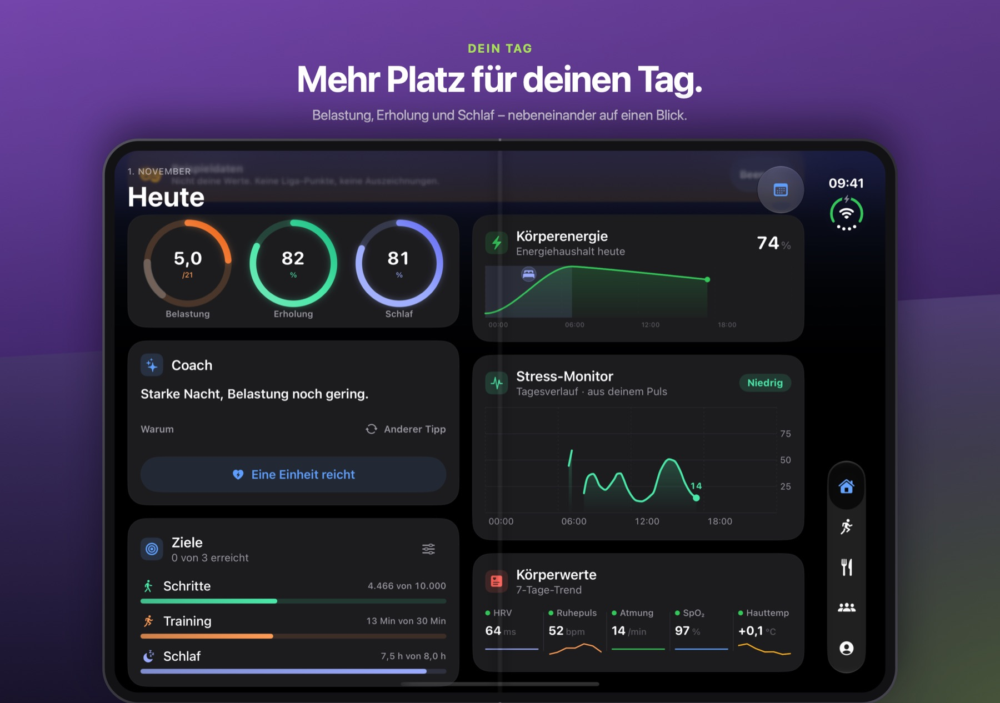
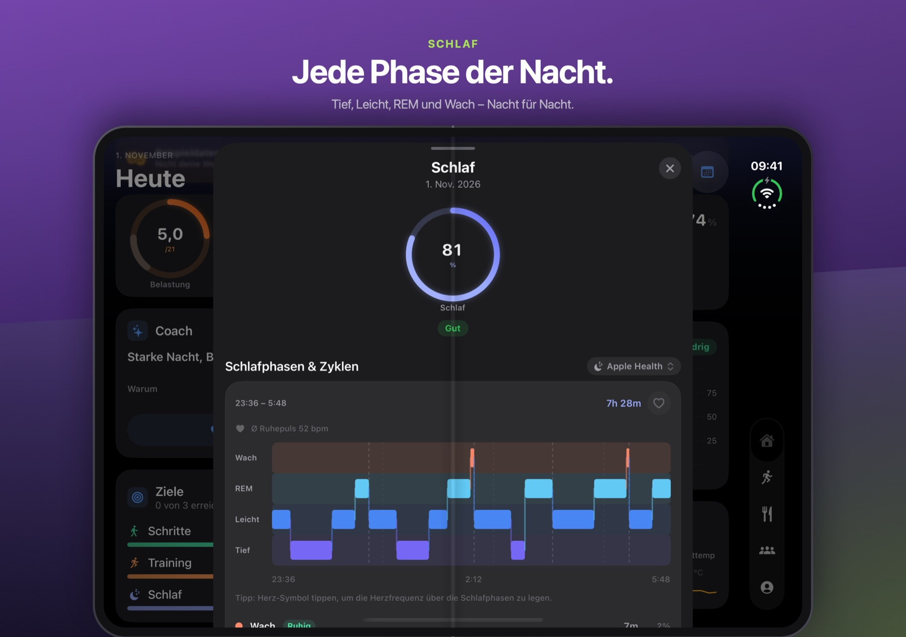
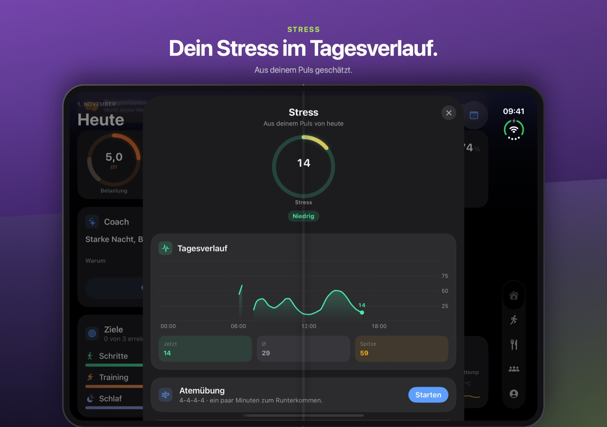
Apple Watch
Die App für die Apple Watch braucht watchOS 26.
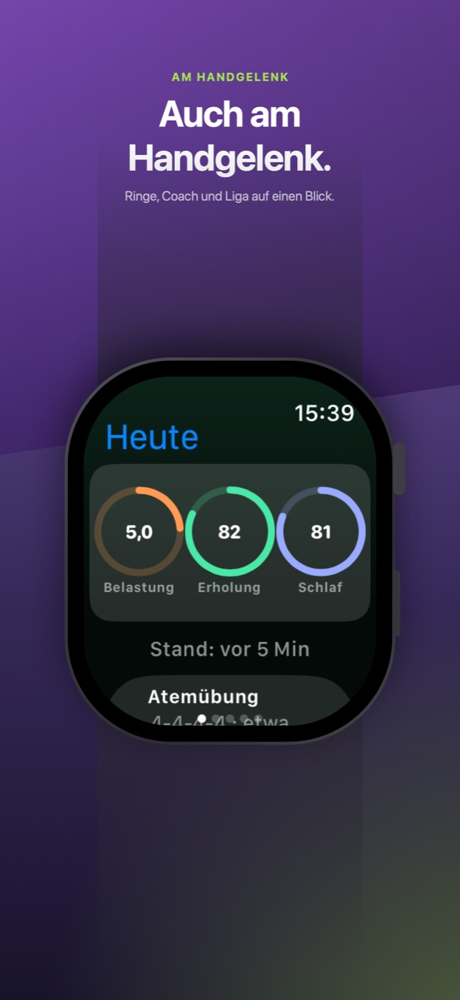
Immer dabei
Ringe, Coach und Liga, auch auf dem Sperrbildschirm.
Check-in, Atemübung und Arena mit einem Tipp.
Sagt dir, wie dein Tag aussieht.
Mit einem Bild zum Teilen.
Als PDF, CSV und JSON.
Deutsch · English · Français · Português (Brasil) · Türkçe · 日本語 · 한국어 · 简体中文 · 繁體中文
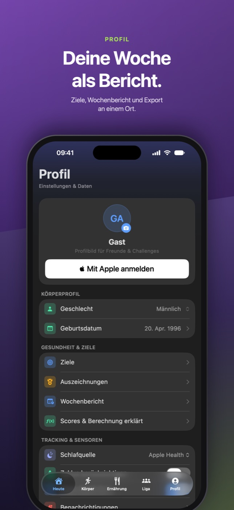
Für iPhone mit iOS 26. Die App für die Apple Watch braucht watchOS 26.
Laden imApp StoreDatenschutz
Keine eigenen Server. Scores, Coach und Modelle laufen auf deinem iPhone und deiner Apple Watch.
Keine Analysedienste Dritter, kein Verkauf von Daten.
Welche Dienste die App nutzt (Apple iCloud, GitHub, Open Food Facts, optional dein KI-Anbieter), steht in der Datenschutzerklärung.
Wofür HealthUp+ da ist. HealthUp+ hilft gesunden Erwachsenen ab 16 Jahren, Training, Erholung, Schlaf und Ernährung im Alltag einzuordnen. Die App zeigt Schätzungen aus deinen Daten in Apple Health und deinen eigenen Einträgen. HealthUp+ ist kein Medizinprodukt. Die App erkennt, überwacht, behandelt oder verhütet keine Krankheiten und ersetzt keine ärztliche Beratung. Wenn du dich krank fühlst oder Beschwerden hast, wende dich an eine Ärztin oder einen Arzt. Im Notfall ruf 112.